ORFF Instrumente
ORFF Instrumente
Instrument | Bild | Spielwerkzeug | |
|---|---|---|---|
Großes Schlagwerk | |||
Handtrommel | Händen | ||
Tambo(u)rin | Hände | ||
Sound shapes | Händen | ||
Bongos | Hände | ||
Pauke | Weichem Filzschlägel | ||
Konga | Hände | ||
Standtrommel | Weichem Filzschlägel | ||
Djembe | Hände | ||
Cajon | Cajon | Hände | |
Schlitztrommel | Schlitztrommel | Hartem oder Weichem Filzschlägel | |
Xylophon | Wollschlägel | ||
Xylophon Klangbaustein | Wollschlägel | ||
Metallophon | Hartem Filzschlägel | ||
Metallophon Klangbaustein | Hartem Filzschlägel | ||
Glockenspiel | Kleinem Scjlägel | ||
Kleines Schlagwerk | |||
Klanghölzer | Hände | ||
Holzblocktrommel | Filzkopfschlägel | ||
Röhrentrommel | Filzkopfschlägel | ||
Stielkastagnette/ Kastagnette | Hände | ||
Wooden Agogo | Holzschlägel | ||
Rassel | Hände | ||
Röhrenrassel | Hände | ||
Guiro | Holzstab | ||
Schüttelei | Hände | ||
Triangel | Metallstab | ||
Fingercymbeln | Händen | ||
Kleine Becken | Filzschlägel (Hart, weich) Drumsticks, Mallets | ||
Große Becken | Filzschlägel (Hart, weich) Drumsticks, Mallets | ||
Schellenstab | Hände | ||
Glockenkrank | Hände | ||
Glockenkranz | Hände | ||
Chimes | Hand, Stab (Holz, Metall) | ||
Glöckchen | Hände | ||
Klangschale | Holzschlägel; Filzschlägel | ||
Rainmaker | Hände | ||
Oceandrum | Hände | ||
Cabasa | Hände | ||
Schellenkranz | Hände | ||
Ratschen | Hände | ||
Cowbell | Holzschlägel | ||
Rührtrommel | Holzschlägel | ||
Boomwhackers | Boomwhackers | Hände, Körper | |
Selbstgebaute Rasseln, Kastagnetten, usw. | |||
Alltagsgegenstände (Topf, Kochlöffel, Schneebesen, Körper, Stimme, usw.) |
Abbildungen aus dem Dokument
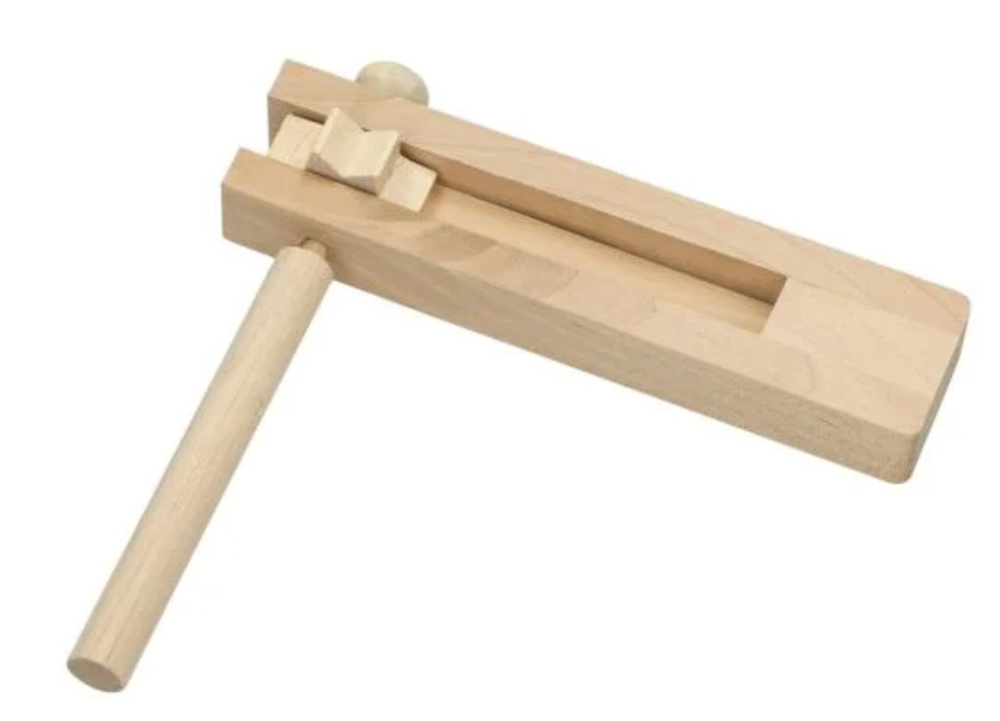
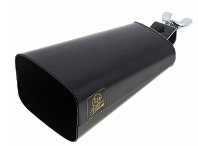
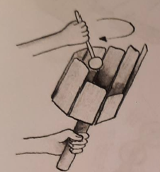
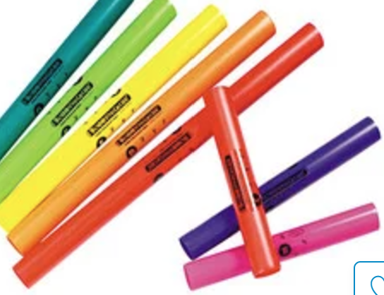
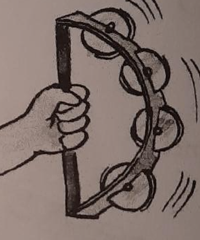
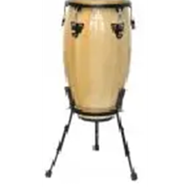
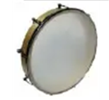
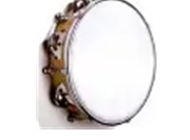
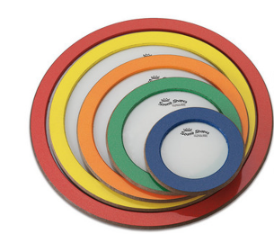
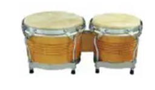
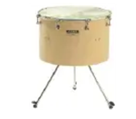
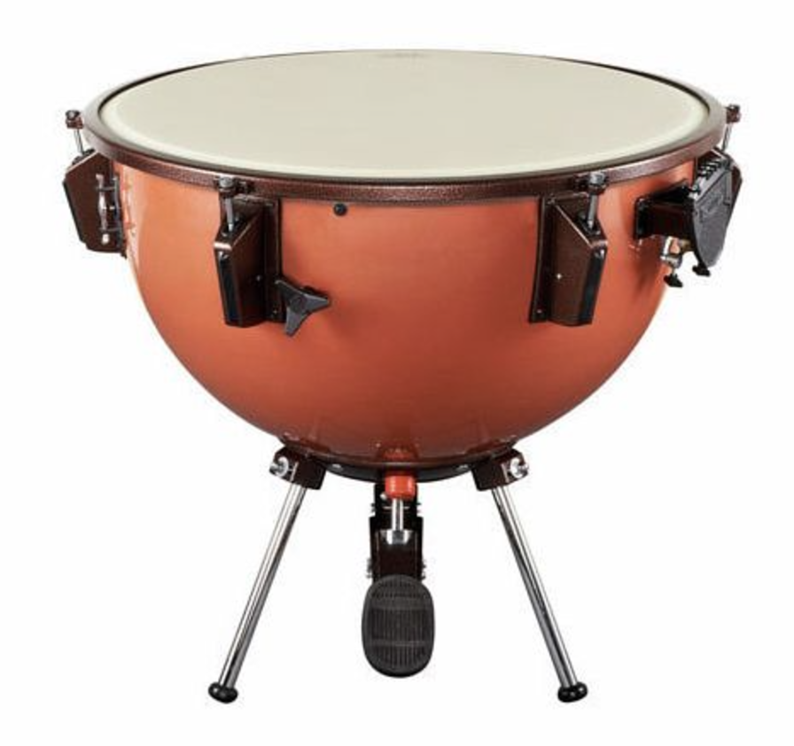
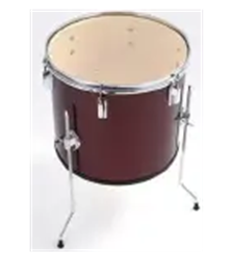
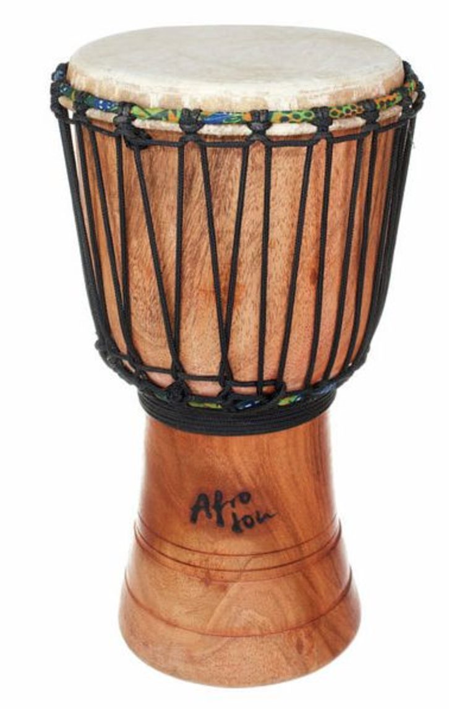
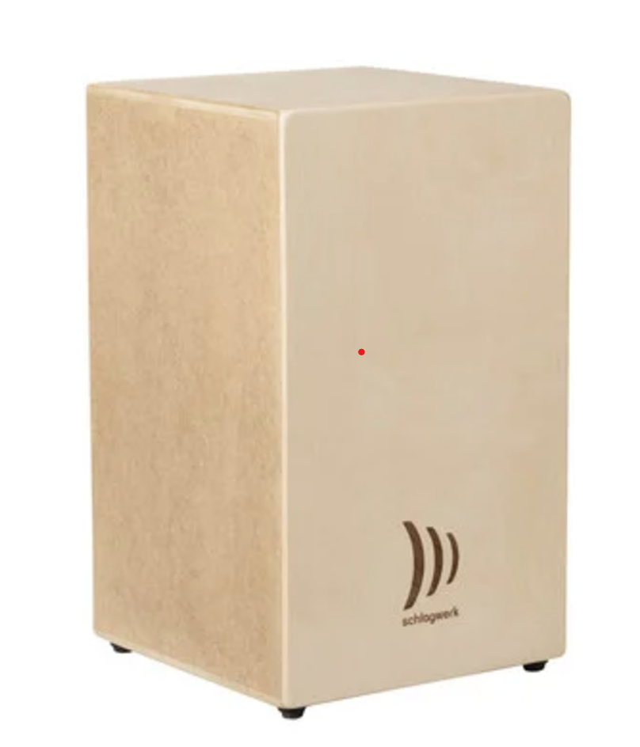
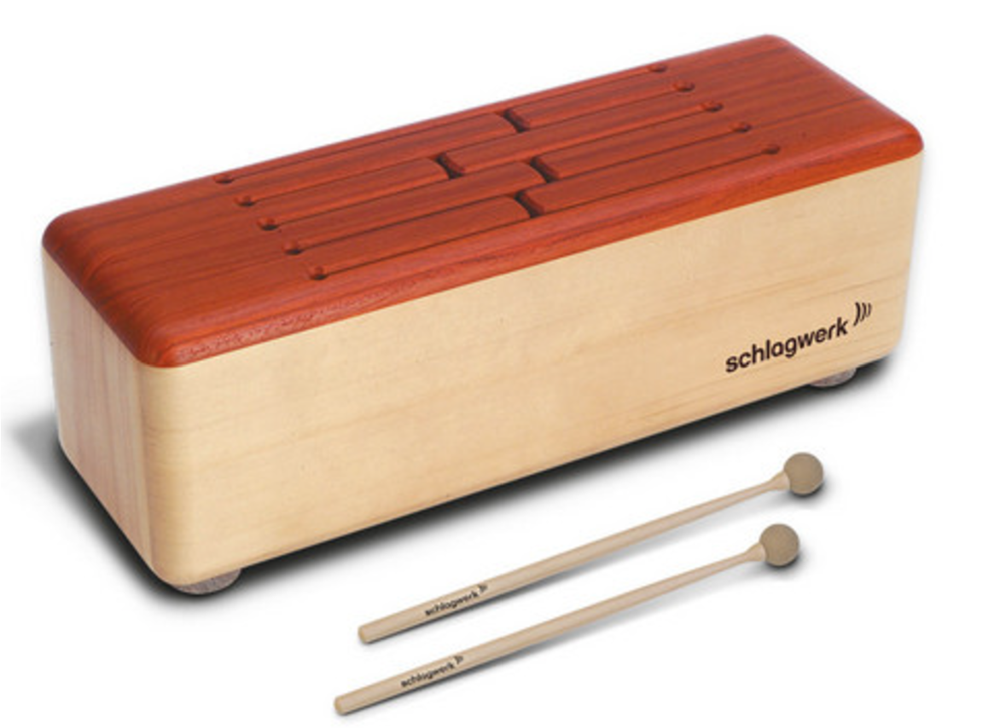
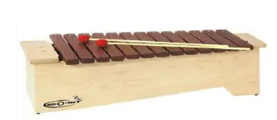
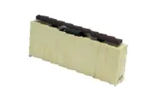
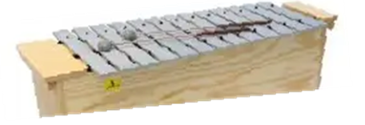
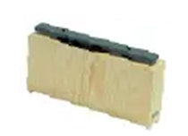
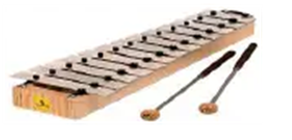
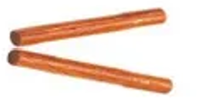
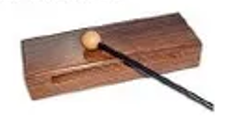
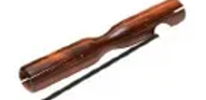
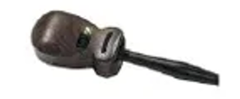
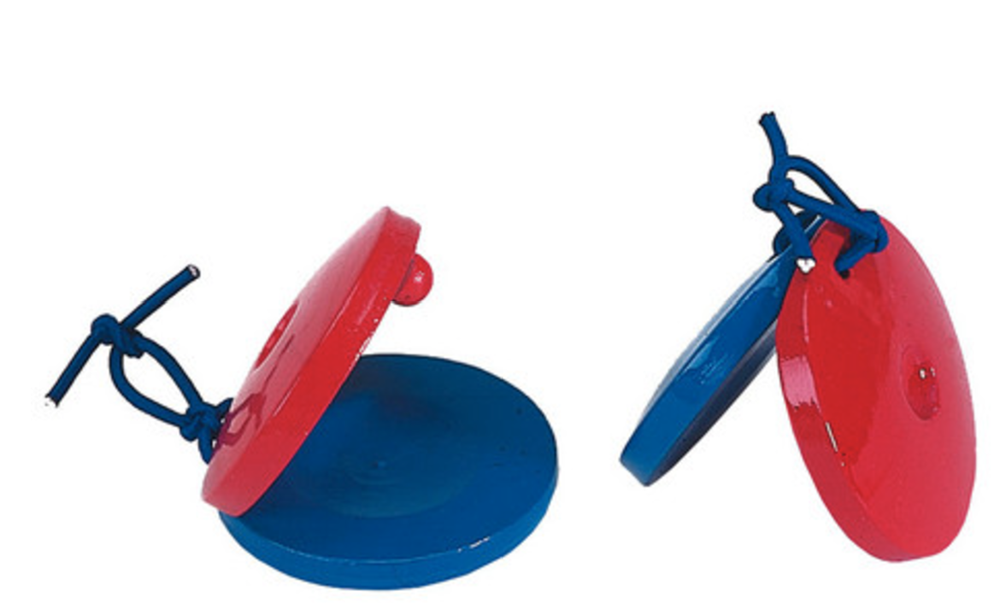
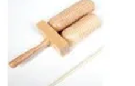
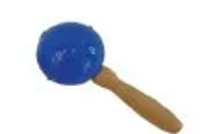
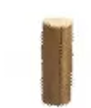
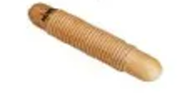
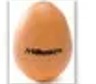
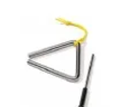
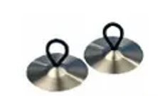
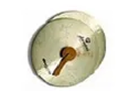
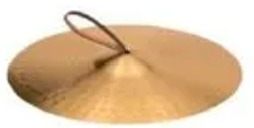
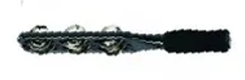
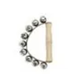
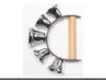
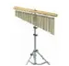
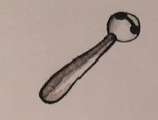
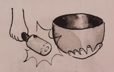
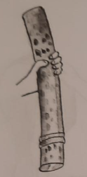
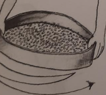
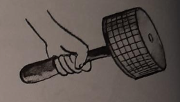
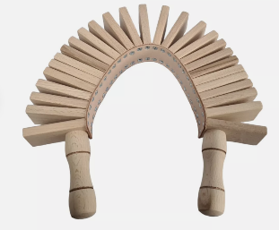